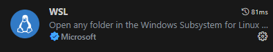

Getting Started
In this lecture we will:
- Install Python on Windows using WSL;
- Install VS Code on Windows;
- Write our first program in Python.
Installing Python
There are many possible ways to install Python on your system. Here we will cover WSL installation on Windows 11.
Installing Windows Subsystem for Linux (WSL)
WSL gives you a Linux environment running on Windows.
To install WSL, first open PowerShell as an adminstrator. For this, press the Windows key, type powershell, right-click on the Windows PowerShell app and select Run as administrator. Then enter the following command:
$ wsl --install
and press Enter. This will install Ubuntu distribution and restart your computer.
Once restarted, open PowerSheel again, this time as a normal user. Then start your Linux session with:
$ wsl ~
Installing Miniconda
Miniconda is a package manager that allows you to install Python and other packages.
Execute the following commands in your terminal:
$ mkdir Downloads
$ cd Downloads
$ wget https://repo.anaconda.com/miniconda/Miniconda3-latest-Linux-x86_64.sh
Once download is completed, run the installer, and follow the instructions:
$ bash Miniconda3-latest-Linux-x86_64.sh
To check that installation was successful, run:
$ conda --version
conda 23.3.1 # your version might be different
Prepare your environment
It's usual for Python developers to create a virtual environment for each project. This allows you to install different versions of Python and packages for each project.
For this course, we will create a virtual environment called pyintro:
$ conda create -n pyintro python=3.11
When you need to use this environment, you can activate it with:
$ conda activate pyintro
You can check it with:
$ python --version
Python 3.11.3 # your version might be different
You can also start Python shell with:
$ python
it will display the version and a prompt >>> where you can type Python commands.
Python 3.11.3
>>> print(1 + 1)
2
To exit the shell, type exit() or press Ctrl+D.
IPython
A more advanced Python shell is IPython. You can install it with:
$ conda install ipython
Installing VS Code
Visual Studio Code (VS Code) is a free and open-source code editor developed by Microsoft.
To install it on your system open the VS Code home page and download the installer for your operating system (we assume, it's Windows 11).
Run the installer, and follow the on-screen instructions.
Now open WSL and type code to launch VS Code. For the first time, it will ask you to install the Remote - WSL extension. Click on the Install button and wait for the installation to complete.

You will need one more extension for Python development. It's called Python and is useful for syntax highlighting and code completion.
One more extension that you might find useful is Jupyter. It allows you to run Jupyter notebooks inside VS Code. We won't explicitly use it in this course, but you might find it useful in your own explorations.
Hello World
Create a new directory called pyintro and open it in VS Code.
$ cd ~ # go to your home directory
$ mkdir pyintro # create a project directory
$ cd pyintro # change the current directory
$ code . # open VS Code
Create a new file called and add the following code:
File: hello_world.py
print("Hello, World!")
To execute this code, run the following command in the terminal:
$ conda activate pyintro # make sure you are in the right environment
$ python hello_world.py # run the script
This should print
Hello, World!
to the terminal.
Congratulations, you have just written your first Python program!
Variables and Simple Data Types
In this lecture, you will learn about variables and simple data types in Python.
Variables
In the previous lecture we wrote a simple program that printed a message to the screen.
Here's an equivalent program:
File: hello-world.py
message = "Hello, World!"
print(message)
We can run this program by typing python hello-world.py in the terminal. As before, the program will print the message "Hello, World!" to the screen.
Note: Miniconda environment,
pyintro, should be activated before running the program.$ conda activate pyintroThis will be our default way of running Python programs in this book. And we won't remind you about it in the future.
Back to the program. The first line of the program declares a variable.
message = "Hello, World!"
In Python, variables are created when you assign a value to them using the = operator. In this case, we assign the message "Hello, World!" to the variable message.
Variable has a name and a value. In this case, the name of the variable is message and the value is "Hello, World!". You can think of variables as containers for storing data. We can later use the variable to access the data stored in it, by its name. Like we do on the second line:
print(message)
Type annotation
One important propery of a variable, which might not be obvious from the example above, is its type. In this case, the type of the variable is str, which is short for string. To make this more explicit, we could have declared the variable in the following way:
message: str = "Hello, World!"
(note the : str part after variable name).
This is called type annotation. It is not necessary in this case, because Python can infer the type of the variable from the value assigned to it. However, it is a good practice to use type annotations in your programs.
In the rest of the book, we will use type annotations in all examples. Though, you can omit them at the beginning, if you find them confusing.
The rest of the program is the same as before:
message: str = "Hello, World!"
print(message)
with the same output
Hello, World!
Exercise
Try to change the program above a bit further. Declare a variable
nameand assign your name to it, for example"Bill". Then print a message that says"Hello, Bill!", using thenamevariable. In the next section you'll learn how to write such a program, but try to figure it out yourself first.
Strings
In previous section we declared a string variable message and printed it to the screen.
message: str = "Hello, World!"
print(message)
What exactly is a string? A string is a sequence of characters. In the example above, the string "Hello, World!" consists of 13 characters: H, e, l, l, o, ,, , W, o, r, l, d, !.
Strings are one of the most common data types that you'll encounter in Python programs. You can use them to represent names, addresses, messages, and many other kinds of information.
Strings are easy to recognize in Python programs. They are enclosed in single or double quotes. In previous example we used double quotes, but single quotes are also valid:
message1: str = "Hello, World!"
message2: str = 'Hello, World!'
assert message1 == message2 # make sure they are equal
Both declarations are equivalent.
You can use either single or double quotes, but you should be consistent. If you start a string with a single quote, you should end it with a single quote. If you start it with a double quote, you should end it with a double quote.
It's possible to use single quotes inside a string that is enclosed in double quotes, and vice versa. For instance this program
print('I said, "Hello, World!"')
print("He said, 'Hello, Sarah!'")
produces the following output:
I said, "Hello, World!"
He said, 'Hello, Sarah!'
It's also possible to use the same type of quotes inside a string, but you have to escape them with a backslash \, for instance:
"I said, \"Hello, World!\""
Some Useful String Methods
Python provides a number of useful methods for working with strings. A method is an action that Python can perform on a piece of data. The dot . after the name of the variable name in the following example tells Python to make the upper() method act on the variable.
name: str = "Linus Torvalds"
print(name.upper())
This program produces the following output:
LINUS TORVALDS
Similarly, the lower() method changes a string to all lowercase:
name: str = "Linus Torvalds"
print(name.lower())
with output
linus torvalds
One more method, which we'll use a lot in this book, is title().
It changes each word to title case, where each word begins with a capital letter:
name: str = "linus torvalds"
print(name.title())
which produces the following output:
Linus Torvalds
String Formatting
Very often you'll want to combine several strings, for example if you have first_name and last_name variables, you might want to combine them into a single string full_name. Python provides several ways to do this. In this section we'll look at the f-string method.
Look at the following example:
first_name: str = "linus"
last_name: str = "torvalds"
full_name: str = f"{first_name} {last_name}"
print(full_name)
and its output:
linus torvalds
First two lines should be familiar to you, we declare two string variables for first and last names. The third line is more interesting
full_name: str = f"{first_name} {last_name}"
Here, we initialize variable with an f-string. The f stands for format.
An f-string is a string that has an f at the beginning and curly braces {} containing expressions that will be replaced with their values.
We can place any valid Python expression inside the curly braces. For example, we can use the title() method to titleize a string:
first_name: str = "linus"
last_name: str = "torvalds"
full_name: str = f"{first_name} {last_name}"
print(f"Hello, {full_name.title()}!")
which outputs a nicely formatted greeting:
Hello, Linus Torvalds!
Dealing with Whitespaces
Whitespace refers to any nonprinting character, such as spaces, tabs, and end-of-line symbols. You can use whitespace to organize your output so it's easier for users to read.
A table below lists some of the whitespace characters:
| Name | Character |
|---|---|
| Space | ' ' |
| Tab | '\t' |
| Newline | '\n' |
And here's an example of using tabs and newlines:
print("Languages:\n\tPython\n\tC\n\tJavaScript")
and its output:
Languages:
Python
C
JavaScript
Quite often you'll want to strip whitespace from strings. For example, you might want to remove extra whitespace from the right side of a name before storing it. Python provides a number of methods for stripping whitespace from strings.
The basic methods for removing excess whitespace are rstrip(), lstrip(), and strip(). The lstrip() method removes whitespace from the left side of a string, rstrip() removes whitespace from the right side, and strip() removes whitespace from both sides.
Try to run the following program:
favorite_language = ' python '
print(f"'{favorite_language}'") # original string
print(f"'{favorite_language.rstrip()}'") # right strip
print(f"'{favorite_language.lstrip()}'") # left strip
print(f"'{favorite_language.strip()}'") # strip both sides
and compare the output:
' python '
' python'
'python '
'python'
Removing Prefixes
Another useful method is removeprefix(). It removes a prefix from a string. For example, if you have an url, you can remove ``
url = 'https://dimakura.github.io'
print(url.removeprefix('https://'))
which produces the following output:
dimakura.github.io
Numbers
In Python we mostly deal with two types of numbers: integers and floating-point numbers.
Integers
Integers are whole numbers, such as 1, 2, 3, etc. Integers can be positive or negative.
Python supports basic arithmetic operations on integers, such as addition (+), subtraction (-), multiplication (*), and division (/).
Tihs is a simple example of using integer operations in Python:
print(2 + 3)
print(2 - 3)
print(2 * 3)
print(3 / 2)
which will print:
5
-1
6
1.5
Note that the division operator (/) always returns a floating-point number, even if the result is a whole number.
Few more useful operations on numbers are the exponentiation operator (**), the modulo operator (%), and the floor division operator (//).
Floating-Point Numbers
Any number with a decimal point is a floating-point number. Python supports the same basic arithmetic operations on floating-point numbers as it does on integers.
As an exercise, try to practice operations on floating-point numbers by modifying the examples above.
Checking Variable Types
If you are not sure what type a variable is, you can ask Python to tell you. For example, if you have a variable called x, you can ask Python what type it is by using the type() function:
x = 10
y = 20.0
z = 'hello'
print(type(x))
print(type(y))
print(type(z))
which will print:
<class 'int'>
<class 'float'>
<class 'str'>
Comments
Comments are lines that exist in a programs that are ignored by Python. Including comments in programs makes code more readable for humans as it provides some information or explanation about what each part of a program is doing.
In Python, the # character indicates the start of a comment. Any characters after the # and up to the end of the line are part of a comment and will be ignored by the Python interpreter.
# this is a comment
message = "Hello, World!" # this is also a comment
Another way to write comments in Python is to use multi-line strings. Python ignores multi-line strings that are not assigned to a variable, so they can be used as comments.
"""
This is a multi-line comment.
"""
message = "Hello, World!"